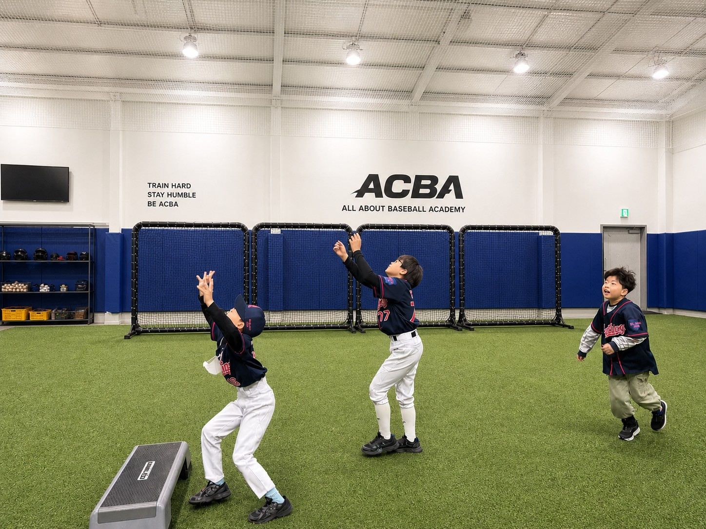
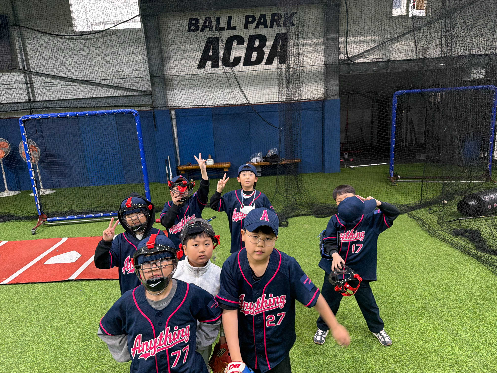
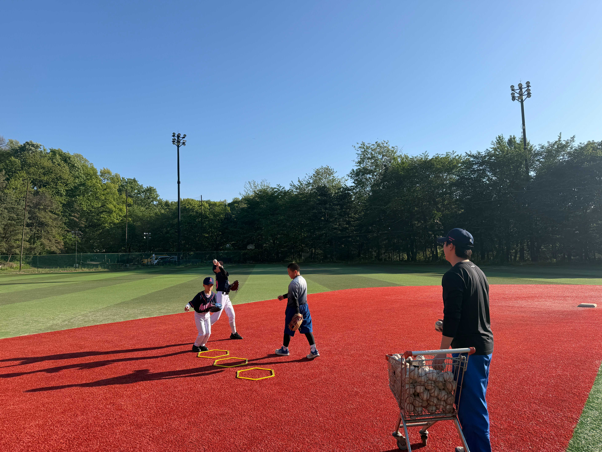
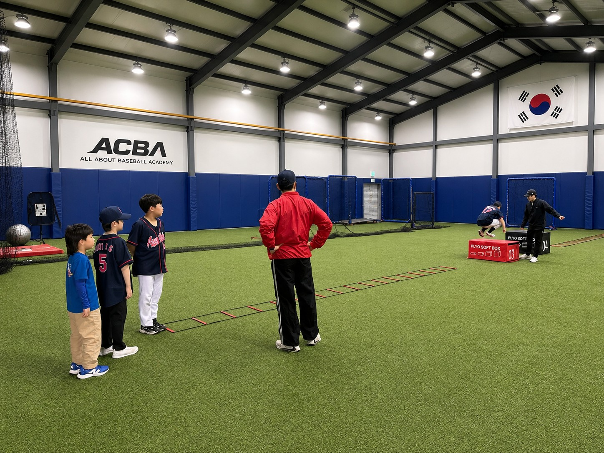
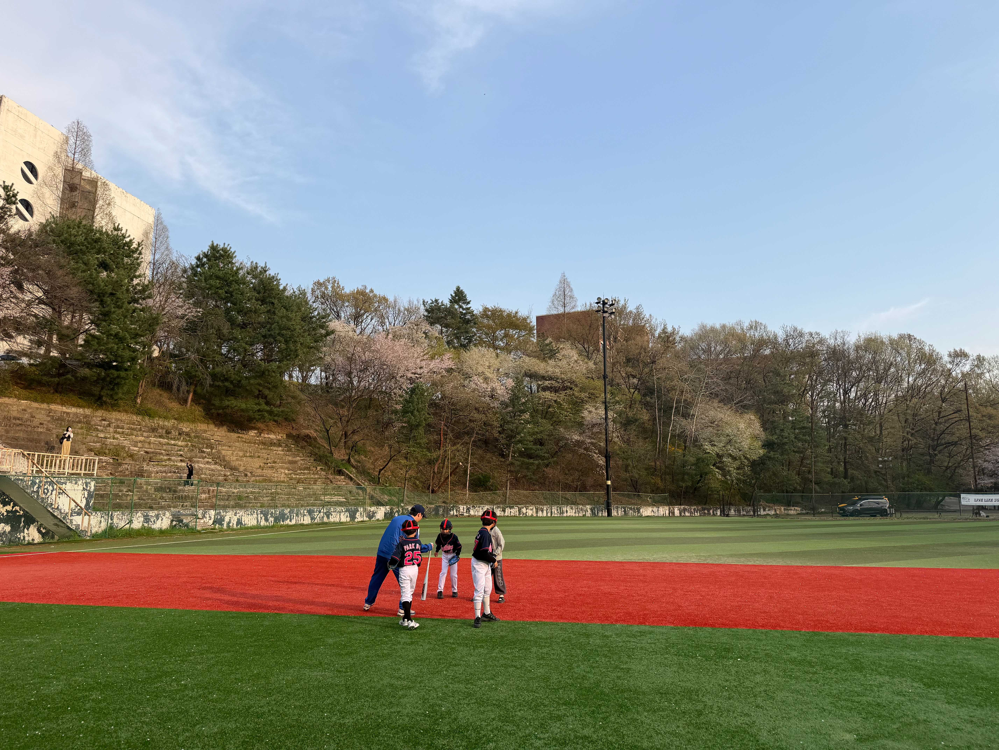
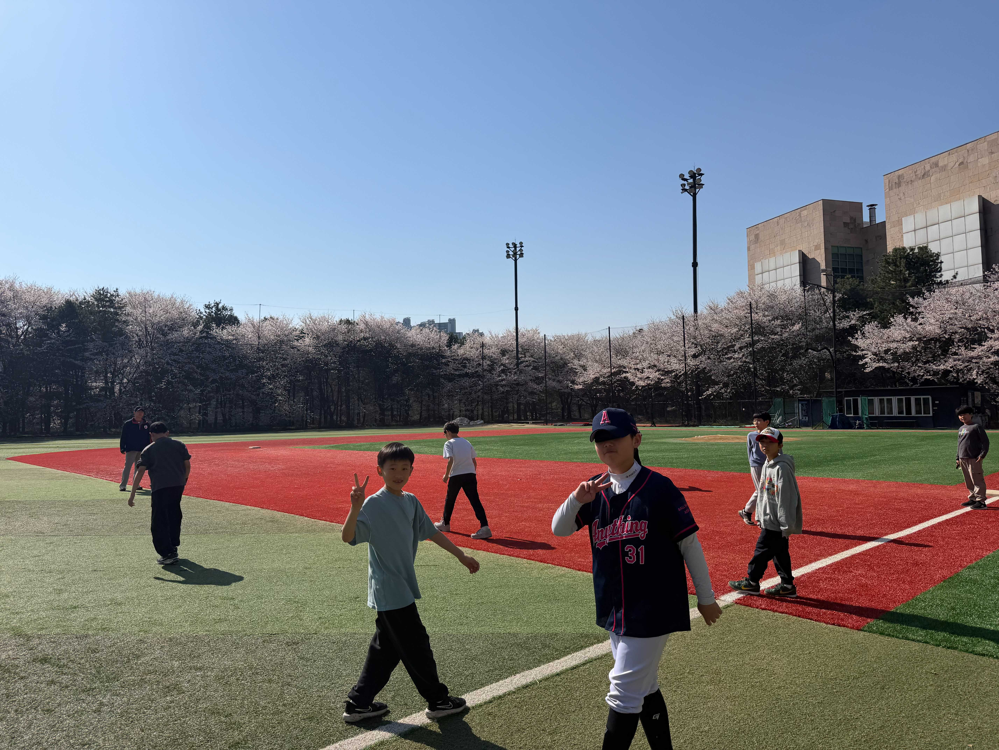

체형 교정 · 두뇌 발달 · 팀워크 · 자신감
유소년 성장의 모든 것을 담은 애니띵즈 야구 아카데미



발레가 체형 교정을 만들듯, 야구는 아이의 신체와 정신 모두를 성장시킵니다
투구·타격·수비의 정확한 자세 훈련이 척추 균형과 어깨·골반의 좌우 대칭을 잡아줍니다. 성장기 바른 체형의 기초를 만듭니다.
타자의 구종 예측, 수비 위치 판단 등 야구의 모든 순간이 빠른 사고와 전략적 판단력을 키웁니다. 학습 능력과 집중력이 함께 성장합니다.
순간 가속, 민첩성, 유연성, 코어 근력을 동시에 키우는 야구 특화 체력 훈련. 모든 스포츠의 기반이 되는 기초 체력을 완성합니다.
9명이 하나로 움직이는 팀 스포츠. 서로를 응원하고 역할을 나누며 사회성과 배려심, 자연스러운 리더십이 길러집니다.
실패를 극복하고 다시 일어서는 경험. 삼진아웃을 이겨내는 과정이 강인한 정신력과 도전 정신을 가르칩니다.
수비 위치, 전술적 선택 등 야구의 무한한 경우의 수가 아이의 창의적 사고와 깊은 집중력을 자연스럽게 개발합니다.
야구는 예체능의 가치를 넘어, 아이의 전인적 성장을 완성합니다
300평 실내 훈련장 + 수원대학교 정규 야구장 - 프로와 동일한 환경



유아부터 초등까지, 성장 단계에 맞는 전문 프로그램
무료 체험 수업으로 애니띵즈를 직접 경험해보세요.
전문 코치가 아이의 수준에 맞게 안내해드립니다.
* 신청 후 24시간 내 연락드립니다